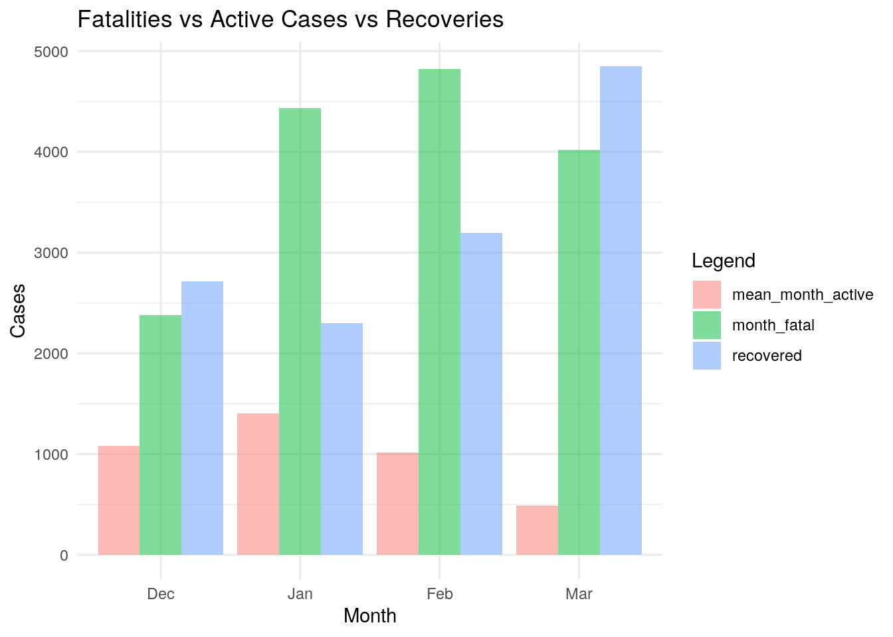

January 1, 0001
Project 1
Introduction
Currently, we are living in a world of open data. Alongside this, we are living in a pandemic. I was curious how I could access COVID-19 data and use it for this project. I was mainly curious to see the levels of cases and fatalities, especially in conjunction with the release of the vaccine and its recent access expansion. I would hopefully like to see a general decrease in cases as people become more careful and as more people get/recover from having it. The beginning of vaccination should also hopefully show another period of numbers dropping, which should continue as more people become vaccinated. It would also be interesting to see when there are COVID-19 peaks and correlating them with whatever events are occurring.
Since we are living in Texas, I pulled various public datasets from our government websites. These datasets are all hosted and sponsored by the government and are publicly available. These datasets are mainly one variable, including population, total cases, active cases, and fatalities all by Texas’ county, daily over the pandemic period. The common variable between the datasets is that they are separated into each Texas county.
Joining
library(dplyr)
library(tidyverse)
library(ggplot2)
library(readxl)
setwd("~/my stuff/website/content/project")
population <- read.csv("2019_txpopest_county.csv")
Active_Cases <- read_excel("Texas COVID-19 Active Case Data by County.xlsx")
Total_Cases <- read_excel("Texas COVID-19 Case Count Data by County.xlsx")
Fatalities <- read_excel("Texas COVID-19 Fatality Count Data by County.xlsx")
pop_2020 <- population %>% select(county, jan1_2020_pop_est) %>%
filter(county != "State of Texas") %>% mutate(county = tolower(county))
Active_Cases <- Active_Cases %>% na.omit() %>% rename(county = 1) %>%
filter(county != "County") %>% mutate(county = tolower(county))
Longer_Active_cases <- Active_Cases %>% pivot_longer(contains("-")) %>%
separate(name, into = c("Month", "Day"), sep = "-") %>% select(-"Day") %>%
mutate(Month = recode(Month, `12` = "Dec", `01` = "Jan",
`02` = "Feb", `03` = "Mar")) %>% mutate(cases = value) %>%
group_by(county, Month) %>% summarise(mean_month_active = mean(cases)) %>%
mutate_if(is.numeric, round, 3)
Fatalities <- Fatalities %>% na.omit() %>% rename(county = 1) %>%
filter(county != "County Name") %>% filter(county != "Total") %>%
filter(county != "UNKNOWN") %>% mutate(county = tolower(county))
Longer_Fatalities <- Fatalities %>% pivot_longer(contains("-")) %>%
separate(name, into = c("Month", "Day"), sep = "-") %>% select(-"Day") %>%
mutate(Month = recode(Month, `12` = "Dec", `01` = "Jan",
`02` = "Feb", `03` = "Mar")) %>% mutate(cases = value) %>%
group_by(county, Month) %>% summarise(month_fatal = sum(cases)) %>%
mutate_if(is.numeric, round, 3)
Total_Cases <- Total_Cases %>% na.omit() %>% rename(county = 1) %>%
filter(county != "County Name") %>% filter(county != "Total") %>%
mutate(county = tolower(county))
Longer_Total <- Total_Cases %>% pivot_longer(contains("-")) %>%
separate(name, into = c("Month", "Day"), sep = "-") %>% select(-"Day") %>%
mutate(Month = recode(Month, `12` = "Dec", `01` = "Jan",
`02` = "Feb", `03` = "Mar")) %>% mutate(cases = value) %>%
group_by(county, Month) %>% summarise(month_total = max(cases)) %>%
mutate_if(is.numeric, round, 3)
Joined <- left_join(Longer_Active_cases, Longer_Total, by = c("county",
"Month"))
Joined <- left_join(Joined, Longer_Fatalities, by = c("county",
"Month"))
Joined <- left_join(Joined, pop_2020, by = c("county"))
Joined <- Joined %>% na.omit()First, I pulled the datasets from their various locations. Then I set up the variables of each dataset so that I could proceed with joining. I chose to use the left join for multiple reasons. For the first join, there was not an important dataset but the left join was able to join the total cases to the active cases. I did this by both month and county so that no data would be mis-joined. After this first join, I used left join to make the Joined database the important database in which everything should match. Finally, with the last join, I removed the by month as the population data set did not include a by month population. Dewitt County was dropped through the process as they were missing a lot of data for the various variables causing a lot of issues below.
Tidying
The code for the tidying aspect can be found in the Joining section as I did them together. I pivoted_longer to make the data tidy. Originally, there was a column for each date the data was taken. Pivot longer allowed it to have a row for each county and within each county each date the data counted. Then I removed the day data, grouped by county and month, and then averaged the data by month within each county. This way we can see the average monthly statistic for each of the variables. I also tidied further down in order to access variables and work on different datasets for different purposes
Wrangling
Joined <- Joined %>% group_by(county, Month) %>% mutate(Uninfected = jan1_2020_pop_est -
month_total) %>% mutate(recovered = month_total - mean_month_active -
month_fatal)
Joined %>% group_by(county) %>% select(-month_total) %>% summarise_if(is.numeric,
list(Mean = mean), na.rm = T) %>% arrange(desc(mean_month_active_Mean)) %>%
filter(mean_month_active_Mean > median(mean_month_active_Mean))## # A tibble: 126 x 6
## county mean_month_acti… month_fatal_Mean jan1_2020_pop_e… Uninfected_Mean
## <chr> <dbl> <dbl> <dbl> <dbl>
## 1 tarra… 31116. 58111 2063496 1880516
## 2 harris 29237. 118426 4703708 4386180.
## 3 dallas 24022. 78940. 2647627 2424375
## 4 el pa… 22550. 58513. 851888 735892.
## 5 montg… 17698. 10150. 609172 576218.
## 6 bexar 17684. 66834. 2006193 1862482
## 7 denton 12356. 14206. 904005 860105.
## 8 fort … 11018. 13146 818912 773814.
## 9 galve… 4758. 7744. 341146 314287.
## 10 smith 4116. 9390. 232675 222839.
## # … with 116 more rows, and 1 more variable: recovered_Mean <dbl>Joined %>% group_by(county) %>% select(-month_total) %>% summarise_if(is.numeric,
list(SD = sd), na.rm = T) %>% arrange(desc(mean_month_active_SD)) %>%
filter(mean_month_active_SD > median(mean_month_active_SD)) %>%
select(-jan1_2020_pop_est_SD)## # A tibble: 126 x 5
## county mean_month_active_SD month_fatal_SD Uninfected_SD recovered_SD
## <chr> <dbl> <dbl> <dbl> <dbl>
## 1 tarrant 16155. 18535. 37640. 33587.
## 2 el paso 15646. 12500. 13120. 25995.
## 3 dallas 12243. 23713. 36498. 28928.
## 4 harris 11966. 31363. 58505. 43986.
## 5 bexar 9346. 20190. 34372. 26062.
## 6 montgomery 5932. 3070. 7071. 2294.
## 7 webb 2468. 4448. 7661. 5610.
## 8 ector 2179. 1866. 1065. 1977.
## 9 denton 2023. 4713. 9176. 6434.
## 10 fort bend 1887. 3315. 9466. 6891.
## # … with 116 more rowsJoined %>% group_by(county) %>% select(-month_total) %>% summarise_if(is.numeric,
list(Var = var), na.rm = T) %>% arrange(desc(mean_month_active_Var)) %>%
filter(mean_month_active_Var > median(mean_month_active_Var)) %>%
select(-jan1_2020_pop_est_Var) %>% mutate_if(is.numeric,
round, 3)## # A tibble: 126 x 5
## county mean_month_active_Var month_fatal_Var Uninfected_Var recovered_Var
## <chr> <dbl> <dbl> <dbl> <dbl>
## 1 tarrant 260994915. 343551822 1416772045. 1128117387.
## 2 el paso 244812024. 156249933. 172147194. 675725579.
## 3 dallas 149898818. 562297183 1332101181. 836805182.
## 4 harris 143192086. 983615461. 3422825494. 1934759917.
## 5 bexar 87342437. 407642077. 1181406301. 679231950.
## 6 montgomery 35184133. 9426224. 50000548. 5261866.
## 7 webb 6091913. 19786481. 58696316. 31477492.
## 8 ector 4746353. 3482460. 1134430. 3909697.
## 9 denton 4093389. 22210480. 84201935. 41395648.
## 10 fort bend 3561255. 10990918 89603163 47488799.
## # … with 116 more rowsJoined %>% group_by(county) %>% select(-month_total) %>% summarise_if(is.numeric,
list(IQR = IQR), na.rm = T) %>% arrange(desc(mean_month_active_IQR)) %>%
filter(mean_month_active_IQR > median(mean_month_active_IQR)) %>%
select(-jan1_2020_pop_est_IQR)## # A tibble: 126 x 5
## county mean_month_active_IQR month_fatal_IQR Uninfected_IQR recovered_IQR
## <chr> <dbl> <dbl> <dbl> <dbl>
## 1 el paso 22970. 16003. 14934. 30042.
## 2 dallas 12701. 18520 34066. 34478.
## 3 tarrant 11906. 12548. 34475 39418.
## 4 harris 11720. 24086 58918 47318.
## 5 montgomery 7469. 1980. 6927. 1493.
## 6 bexar 6818. 14298. 36140. 29715.
## 7 denton 3351. 2780. 10093. 5523.
## 8 galveston 3054. 1305. 5359. 3324.
## 9 fort bend 2818. 2858. 9986 7801.
## 10 lubbock 2576. 5408. 2602. 2175.
## # … with 116 more rowstemp <- Joined %>% group_by(Month) %>% arrange(Month) %>% filter(mean_month_active ==
max(mean_month_active)) %>% select(county)
Joined %>% group_by(Month) %>% arrange(Month) %>% summarise(max(mean_month_active)) %>%
left_join(temp)## # A tibble: 4 x 3
## Month `max(mean_month_active)` county
## <chr> <dbl> <chr>
## 1 Dec 35909. el paso
## 2 Feb 32285. harris
## 3 Jan 49376. tarrant
## 4 Mar 22586. montgomerytemp2 <- Joined %>% group_by(Month) %>% arrange(Month) %>% filter(month_fatal ==
max(month_fatal)) %>% select(county)
Joined %>% group_by(Month) %>% arrange(Month) %>% summarise(max(month_fatal)) %>%
left_join(temp2)## # A tibble: 4 x 3
## Month `max(month_fatal)` county
## <chr> <dbl> <chr>
## 1 Dec 73392 harris
## 2 Feb 145376 harris
## 3 Jan 131528 harris
## 4 Mar 123408 harristemp3 <- Joined %>% group_by(Month) %>% arrange(Month) %>% filter(recovered ==
max(recovered)) %>% select(county)
Joined %>% group_by(Month) %>% arrange(Month) %>% summarise(max(recovered)) %>%
left_join(temp3)## # A tibble: 4 x 3
## Month `max(recovered)` county
## <chr> <dbl> <chr>
## 1 Dec 137064. harris
## 2 Feb 171187. harris
## 3 Jan 139608. harris
## 4 Mar 231599. harrisI wanted to view the main statistics across the various variables to determine what might be a significant set of statistics to look at. It showed that the largest amount of active cases overall was found in Tarrant county, which surprised me as I would think that the county with the largest population would have the largest amount of cases. However, Harris county, with a population double of Tarrant, had less cases overall. This shows that something in Tarrant county occurred over this 4 month period in which COVID-19 numbers increased disproportionately to its population size. There was also a large amount of deviation between the months in these larger counties(Harris, Dallas, El Paso, and Tarrant), which makes sense as larger populations may have different peaks according to the events that occurred in their vicinity. Finally, I was curious as to see which counties had the highest active cases in a given month. In December, it was El Paso. In January, it was Tarrant. In February, it was Harris county and in March it was Montgomery. Interestingly enough, no county held the max average active cases for more than one month. This could be due to safety protocols being implemented or people being more conscious due to their county having the most active cases in the previous month. Harris county had the most amount of fatalities each month while also having the largest number of recoveries each month as well, which makes sense as they are the largest county.
Visualization
Correlation Map
cor <- Joined %>% ungroup() %>% select(-county) %>% mutate(Month = recode(Month,
Dec = "00", Jan = "01", Feb = "02", Mar = "03")) %>% mutate(Month = as.numeric(Month)) %>%
cor(use = "pair")
cor %>% as.data.frame %>% rownames_to_column %>% pivot_longer(-1) %>%
ggplot(aes(rowname, name, fill = value)) + geom_tile() +
scale_fill_gradient2(low = "red", high = "green") + geom_text(aes(label = round(value,
2)), color = "black", size = 2.5) + xlab("") + ylab("") +
theme(axis.text.x = element_text(size = 9, angle = 45, hjust = 1),
axis.text.y = element_text(size = 8)) + coord_fixed() +
ggtitle("Correlation Between COVID-19 Statistics within Texas Counties") +
theme(plot.title = element_text(hjust = 0.5))When looking at the correlation map, some of the variables that the correlations don’t matter show that there is a lack of correlation. However, when looking specifically at various different correlations, those do make sense. The population size generally correlates with the various numbers. Larger populations are showing larger amounts of active cases, fatalities, total cases, and higher levels of both recovered and uninfected individuals. This makes sense as a larger population would have larger amount of individuals getting COVID-19 (the active cases) and therefore more fatalities/recovered cases. This type of logical correlation is confirmed with other correlations, such as active cases and fatalities as the more actives cases there are, the more fatalities are expected. What was slightly surprising was the lower strength in correlation between active cases and recovered cases. This may due to the less data used or there may be other methods in which recovery is being measured that might not show correlations, such as not all recovery data is being received. Similarly, there is a 0 correlation with month and other variables. At first you would think there would be corelation, however, there were peaks and dips in the cases over these four months. With more time, we may see a correlation with month and the variables.
Plots of Monthly Cases
Joined_Large <- Joined %>% filter(jan1_2020_pop_est > 5e+05)
Joined_Large %>% ggplot(aes(Month, mean_month_active, color = county)) +
geom_point() + geom_line(aes(group = county)) + scale_x_discrete(name = "Month",
limits = c("Dec", "Jan", "Feb", "Mar")) + scale_y_continuous(limits = c(0,
50000), breaks = seq(0, 50000, 5000)) + ylab("Average Monthly Active Cases") +
ggtitle("Monthly Active Cases Across Counties with a Population>.5 Million Individuals") +
theme_minimal()Joined %>% group_by(county) %>% ggplot(aes(Month, mean_month_active)) +
geom_bar(stat = "summary", fun = mean, fill = "#ADD8E6") +
scale_x_discrete(name = "Month", limits = c("Dec", "Jan",
"Feb", "Mar")) + ylab("Total Average Monthly Active Cases") +
ggtitle("Average Monthly Active Cases per County")This was an interesting set of plots to do as I was able to see the trends in cases overall and within the larger counties. You can see on the bar graph that there was a peak in cases in general across Texas in January. This trend was mimicked in the plot that showed the county levels. Earlier in the summary data, we saw that El Paso had the highest level of cases in December, Tarrant county in January, Harris in February, and Montgomery in March. This was shown here as well but we can also see the gaps in between the counties and how in general after January, the levels have been decreasing. I think this is both due to the recovered individuals possessing antibodies for COVID-19 but also with the increase in vaccination/consciousness levels are also decreasing.
Plots of Average Fatalities vs Active cases vs recovered cases by Month for Texas
Joined %>% select(Month, month_fatal, mean_month_active, recovered) %>%
pivot_longer(cols = c(month_fatal, mean_month_active, recovered),
names_to = "Legend") %>% ggplot() + geom_bar(aes(x = Month,
y = value, fill = Legend), stat = "summary", fun = mean,
alpha = 0.5, position = "dodge") + theme_minimal() + ylab("Cases") +
scale_x_discrete(name = "Month", limits = c("Dec", "Jan",
"Feb", "Mar")) + ggtitle("Fatalities vs Active Cases vs Recoveries") This plot showed the difference in the active cases per month, but with comparison to the deaths occurring and the recoveries happening. It was interesting to see how that directly the active cases dropping was due to increases in recovery and fatalities. There was a massive drop in active cases between February and March. This, when looking at both recoveries and fatalities, was directly correlated to a massive increase in recoveries, but also a significant amount of fatalities. On the other hand, we can also see how there was a massive up tick in fatalities that went along with the massive increase in active cases in January. You can also see an increase in both fatalities and recoveries in February, which could be due to delayed recoveries and fatalities occurring after the spike in cases.
Dimensionality Reduction
PCA Prep
Joined_Prep <- Joined %>% ungroup() %>% filter(Month == "Jan")
Joined_Prep[is.na(Joined_Prep)] = 0
joined_num <- Joined_Prep %>% select_if(is.numeric, na.rm = T) %>%
scale
rownames(joined_num) <- Joined_Prep$county
joined_pca <- princomp(joined_num)Determining number of PC clusters
eigval <- joined_pca$sdev^2
varprop = round(eigval/sum(eigval), 2)
ggplot() + geom_bar(aes(y = varprop, x = 1:6), stat = "identity") +
xlab("") + geom_path(aes(y = varprop, x = 1:6)) + geom_text(aes(x = 1:6,
y = varprop, label = round(varprop, 2)), vjust = 1, col = "orange",
size = 5) + scale_y_continuous(breaks = seq(0, 0.6, 0.2),
labels = scales::percent) + scale_x_continuous(breaks = 1:10) +
ggtitle("Scree Plot for PCA of Joined Data") + theme(plot.title = element_text(hjust = 0.5)) +
xlab("Principal Component") + ylab("Percentage of Variance Accounted For")eigval## Comp.1 Comp.2 Comp.3 Comp.4 Comp.5 Comp.6
## 5.575793e+00 2.199787e-01 1.440984e-01 3.641463e-02 1.200429e-15 4.280073e-16PC Plots
PCAplot <- Joined %>% ungroup() %>% select_if(is.numeric, na.rm = T)
temporary <- Joined %>% filter(Month == "Jan") %>% ungroup() %>%
select(county)
joined_pca$scores %>% as.data.frame() %>% cbind.data.frame(temporary) %>%
mutate(PC1 = joined_pca$scores[, 1], PC2 = joined_pca$scores[,
2]) %>% ggplot(aes(PC1, PC2)) + geom_point() + coord_fixed() +
ggtitle("PC Plot of Relevant Principal Components in COVID-19 Data") +
theme(plot.title = element_text(hjust = 0.5)) + xlab("PC1 Score") +
ylab("PC2 Score")
# highest/lowest on Pc 1/2
joined_pca$scores[, 1:2] %>% as.data.frame %>% top_n(3, Comp.1)## Comp.1 Comp.2
## dallas 16.20084 -0.6830203
## harris 24.61597 -2.3023811
## tarrant 13.72516 1.3514352joined_pca$scores[, 1:2] %>% as.data.frame %>% top_n(-3, Comp.1)## Comp.1 Comp.2
## kenedy -0.6478134 -0.07381065
## king -0.6484013 -0.07882739
## loving -0.6491785 -0.07887600joined_pca$scores[, 1:2] %>% as.data.frame %>% top_n(3, Comp.2)## Comp.1 Comp.2
## cameron 1.905952 1.610775
## el paso 7.407795 4.457147
## hidalgo 3.163396 3.067936joined_pca$scores[, 1:2] %>% as.data.frame %>% top_n(-3, Comp.2)## Comp.1 Comp.2
## collin 4.473645 -1.855871
## harris 24.615970 -2.302381
## travis 5.251271 -1.905728Loading Plots
library(ggrepel)
joined_pca$loadings[1:6, 1:2] %>% as.data.frame %>% rownames_to_column %>%
ggplot() + geom_hline(aes(yintercept = 0), lty = 2) + geom_vline(aes(xintercept = 0),
lty = 2) + ylab("PC2") + xlab("PC1") + geom_segment(aes(x = 0,
y = 0, xend = Comp.1, yend = Comp.2), arrow = arrow(), col = "red") +
geom_label_repel(aes(x = Comp.1, y = Comp.2, label = rowname)) +
ggtitle("PCA Plot of Loadings for Relevant Principal Components") +
theme(plot.title = element_text(hjust = 0.5))Interpretation
When looking at the Scree plot, we notice that about 93% of the variation in the data was due to PC1. This is confirmed and shows up in the loading plot. We can see how all of the arrow are skewed towards PC1. PC1 acts as a combination of the variables that are found in PC1. What this means that if you have a high PC1, we should see a large amount within the variables that follow within PC1. Similarly, low PC1 scores also show lower numbers with each of the variables. This is confirmed with the correlation plot showing that majority of the variables are highly positively correlated with each of the other variables. This also confirms that 1 PC is enough through the highly positive correlation. We see earlier when looking at the counties with the highest PC1 are also the ones with the highest populations. This also was shown earlier in how higher populations tend to have higher active cases, fatalities, recovered individuals, etc.
Conclusion
In conclusion, the data was very interesting to play with. I would have liked to explore it more to attempt to create more interesting plots and conclusions. We found out that Tarrant county had more overall active cases, even though Harris county had more than double its population. We found out that Harris county showed both the highest number of Fatalities and recoveries, which makes sense as it has the largest population. Through the graphs, we were able to see visualizations of some of the summary data, such as the levels of active cases as a result to the counties’ individual active case levels, and showing the effects of recovery/fatalities on the overall active case levels over time. Finally with the PCA data, we confirm that one cluster is enough due to the high correlation between the variables. These datas and outcomes could be further explored in a future study where the levels of each variable are shown relative to their population sizes, indicating if there is other possible explanations for the variables outside of population. I would also like to incorporate the vaccination records in a future study as well.